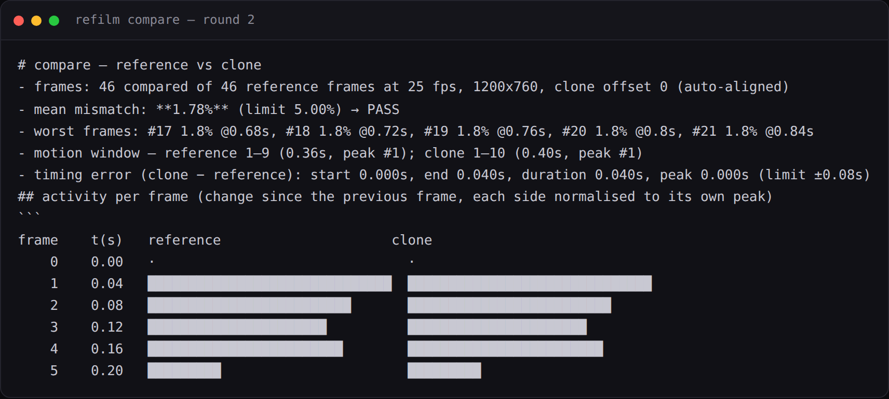
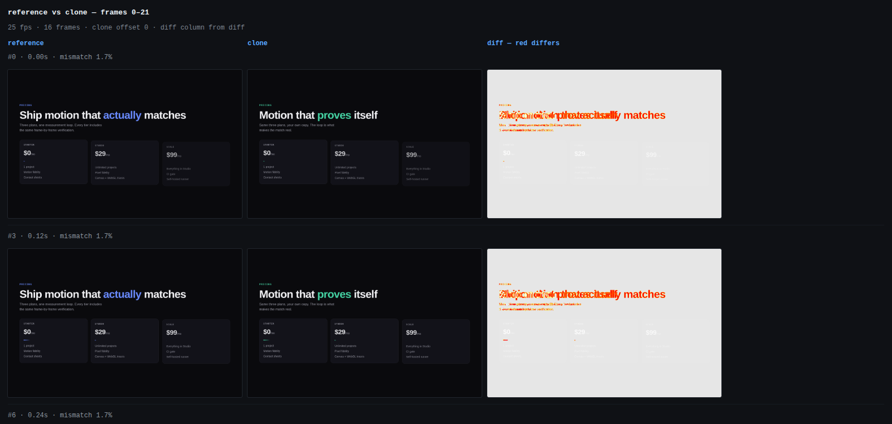

Reading a compare report
refilm compare writes report.md for humans, report.json with
the same numbers typed, and diff/NNNN.png with red where the pixels differ. Read them
in a fixed order or the numbers will mislead you.

Read it in this order
-
setupWarnings— stop if it is not emptyIf the two captures were made with different settings, nothing below means anything. Re-record with the same command, changing only
--urland--out. -
offset— how far the clone is shiftedA big offset is a trigger or delay problem, not a rendering problem. Do not let auto-alignment hide it.
-
timing error— start, end, duration, peakThe motion metric that is independent of colours, fonts and copy. This is the verdict for
motionwork. -
mean mismatch— the pixel metricFor
motionfidelity, a trend. Forpixel, the verdict. -
worst frames— go and look at themOpen those frames on the compare sheet. This is where you find out what is off.
The header, line by line
- frames: 46 compared of 50 reference frames at 25 fps, 1080x408, clone offset -4 (auto-aligned)
- mean mismatch: **6.57%** (limit 5.00%) → FAIL
- worst frames: #18 9.5% @0.72s, #19 9.5% @0.76s, #17 9.4% @0.68s, #20 9.0% @0.8s
- motion window — reference 3–20 (0.72s, peak #3); clone 8–14 (0.28s, peak #14)
- timing error (clone − reference): start 0.200s, end -0.240s, duration -0.440s, peak 0.440s (limit ±0.08s)| Field | Is | Is not |
|---|---|---|
frames compared | the intersection of both frame sets at the same fps | a failure when it is less than the reference count — it means the clone's recording was shorter |
offset | the clone frame that best matches reference frame 0, found by auto-alignment | a rendering difference |
mean mismatch | the fraction of differing pixels, averaged over compared frames | a motion verdict at motion fidelity |
motion window | first, last and peak frame with visible change, per side, measured from the pixel activity curve | the declared animation range |
timing error | clone minus reference, in seconds, for start / end / duration / peak | a per-element number — that is what verify gives you |
The activity curve
frame t(s) reference clone
0 0.00 · ·
1 0.04 ██████████████████████████████ ██████████████████████████████
2 0.08 █████████████████████████ █████████████████████████
3 0.12 ██████████████████████ ██████████████████████
4 0.16 ████████████████████████ ████████████████████████
5 0.20 █████████ █████████
6 0.24 ███████████ ███████████Each bar is how much changed since the previous frame, with each side normalised to its own peak. The shape is the easing and the stagger. This is the part that makes easing debuggable without staring at frames.
| You see | It means | First fix |
|---|---|---|
| bars front-loaded in the clone, even in the reference | the clone's easing is too strong — expo where the reference is quint | change the easing family, not the duration |
| bars flat and even in the clone, spiky in the reference | linear where the reference is ease-out | same — the family is wrong |
| bars in the clone where the reference has none | something animates that should be still | a stray transition, or a hover the pointer triggered |
| bars shifted right in the clone | a delay is too long | per-item delay math, or --wait-before |
| fewer, taller bars in the clone | the clone drops frames | the capture settings, not the code |
Sheets: reference, clone, diff
refilm sheet compare --ref ref/frames --clone clone-1/frames \
--diff compare-1/diff --out compare-1/sheets --every 2
Failure → first thing to check
| What you see | First thing to check |
|---|---|
| offset large | trigger timing, --wait-before, a missing initial delay |
| duration short, front-loaded | easing too aggressive, or the duration taken from the visible window instead of the declared one |
| start late, end on time | delay too long and duration too short — fix both together |
| mismatch high at rest | layout, fonts, crop — not motion |
| overshoot in the reference only | spring vs bezier |
| stagger gaps wrong | per-item delay math |
| last frames differ | fill mode / end state (animation-fill-mode: forwards) |
| everything differs, timing is fine | element boxes are the wrong size |
The per-element version
compare works on whole frames. When you need to know which element is late, use the
track: fit reports the delay, the visible duration, the overshoot and the best-fit
easing per element and property, and can diff two tracks directly.
refilm fit --track ref/track.json --selector ".card" --prop translateY \
--compare-track clone-1/track.jsonstart 38 → end 0 (change -38)
delay 300ms · visible duration 333ms · overshoot 0% · settles 517ms after it starts
verdict: ease-out-quint over ~820ms (good fit)
best fits (rmse over the normalised curve, duration fitted):
1. ease-out-quint rmse 0.0000 ~820ms cubic-bezier(0.22,1,0.36,1) [ease-out]
2. ease-out-quint-alt rmse 0.0022 ~834ms cubic-bezier(0.23,1,0.32,1) [ease-out]
3. ease-out-quart rmse 0.0027 ~690ms cubic-bezier(0.25,1,0.5,1) [ease-out]
Take bestFits[0] as the easing to declare — the bezier is ready to paste into CSS —
rebuild with the fitted duration, then re-run fit on the clone's track. A curve that
fits the same easing with a low RMSE is a motion match even when the pixels are still off.
Next
- The workflow — the fix table in full, and when to stop.
- Fidelity levels — which numbers are a verdict and which are a trend.
refilm compare— every flag that changes this report.